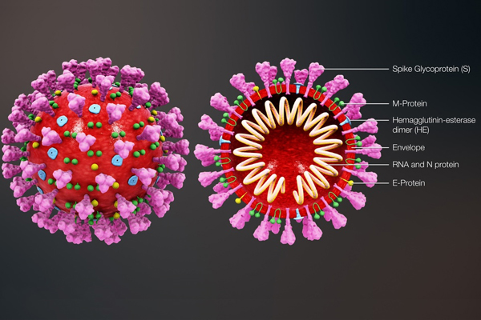

VIRUT LÂY LAN NHƯ THẾ NÀO?
COVID-19 lây lan khi người nhiễm bệnh thở ra các giọt bắn và các hạt rất nhỏ có chứa virus. Những giọt bắn và hạt này có thể bị người khác hít vào hoặc rơi vào mắt, mũi hoặc miệng của họ. Trong một số trường hợp, họ có thể gây ô nhiễm các bề mặt họ chạm vào. Những người ở gần hơn 2m so với người bị nhiễm bệnh có nhiều khả năng bị nhiễm bệnh nhất.
COVID-19 lây lan theo ba cách chính:
• Hít vào không khí khi ở gần người bị nhiễm bệnh đang thở ra những giọt nhỏ và các hạt có chứa virus.
• Để những giọt nhỏ và các hạt có chứa virus rơi vào mắt, mũi hoặc miệng, đặc biệt là thông qua sự bắn tóe và tia xịt như ho hoặc hắt hơi.
• Chạm vào mắt, mũi hoặc miệng bằng tay có virus trên đó.
Virus corona là một họ virus lớn, nhưng chỉ có một số loại được biết là thường gây nhiễm trùng ở người, với những loại virus corona phổ biến ở người này thường gây ra bệnh hô hấp nhẹ đến trung bình (như cảm lạnh thông thường). Các virus corona mới hơn ở người mới sau này, như Hội Chứng Hô Hấp Cấp Tính Nặng (SARS), Hội Chứng Hô Hấp Trung Đông (MERS) và COVID-19 có thể gây ra các triệu chứng nghiêm trọng hơn. COVID-19 ban đầu được cho là đã lây lan từ động vật sang người, nhưng hiện bệnh đã lây lan từ người sang người.

Virus corona gây hội chứng hô hấp cấp tính nặng 2, viết tắt SARS-CoV-2, trước đây có tên là virus corona mới 2019 (2019-nCoV) và cũng được gọi là virus corona ở người 2019, là một chủng coronavirus gây ra bệnh viêm đường hô hấp cấp do virus corona 2019, xuất hiện lần đầu tiên vào tháng 12 năm 2019, trong đợt bùng phát đại dịch COVID-19 ở thành phố Vũ Hán, Trung Quốc và bắt đầu lây lan nhanh chóng, sau đó trở thành một đại dịch toàn cầu. Vào ngày 12 tháng 1 năm 2020, nó được Tổ chức Y tế Thế giới gọi tên là 2019-nCoV, dựa trên một phương thức đặt tên cho virus corona mới. Đến ngày 11 tháng 2 năm 2020, Ủy ban Quốc tế về Phân loại Virus (ICTV) quyết định đặt tên chính thức cho chủng virus corona mới này là SARS-CoV-2 khi họ phân tích rằng nó cùng loài với virus SARS từng gây ra đại dịch năm 2003 nhưng là một chủng khác của loài. Virus này là một loại virus corona RNA liên kết đơn chính nghĩa. Trong khoảng thời gian đầu của đại dịch COVID-19, các nhân viên nghiên cứu đã phát hiện chủng virus này sau khi họ tiến hành đo lường kiểm tra axit nucleic và dò tra trình tự bộ gen ở mẫu vật lấy từ người bệnh
– Hạn chế tiếp xúc trực tiếp với người bị bệnh viêm đường hô hấp cấp tính (sốt, ho, khó thở). Khi cần thiết phải đeo khẩu trang y tế đúng cách, giữ khoảng cách trên 2m khi tiếp xúc.
– Vệ sinh cá nhân, rửa tay thường xuyên bằng xà phòng và nước sạch trong ít nhất 30 giây; nếu không có xà phòng có thể dùng nước vệ sinh tay có chứa cồn từ 60 độ; súc họng bằng nước sát khuẩn miệng để chủ động phòng bệnh.
– Khi ho hoặc hắt hơi cần che bằng khăn giấy hoặc khuỷu tay. Không khạc nhổ bừa bãi nơi công cộng.
– Chỉ sử dụng các thực phẩm đã được nấu chín.
– Tránh mua bán, tiếp xúc với các loại động vật nuôi hoặc hoang dã.
– Tăng cường sức khỏe bằng cách ăn uống, nghỉ ngơi, sinh hoạt, vận động hợp lý. Chú ý giữ ấm cơ thể.
– Nếu có dấu hiệu sốt, ho, khó thở hãy chủ động đeo khẩu trang y tế. Đồng thời, thông báo ngay cho cơ sở y tế gần nhất để được khám và điều trị kịp thời. Nên gọi điện cho cơ sở y tế trước khi đến để thông tin về các triệu chứng và lịch trình di chuyển của bản thân trong thời gian gần đây.
– Vệ sinh cá nhân, rửa tay thường xuyên bằng xà phòng và nước sạch trong ít nhất 30 giây; nếu không có xà phòng có thể dùng nước vệ sinh tay có chứa cồn từ 60 độ; súc họng bằng nước sát khuẩn miệng để chủ động phòng bệnh.
– Khi ho hoặc hắt hơi cần che bằng khăn giấy hoặc khuỷu tay. Không khạc nhổ bừa bãi nơi công cộng.
– Chỉ sử dụng các thực phẩm đã được nấu chín.
– Tránh mua bán, tiếp xúc với các loại động vật nuôi hoặc hoang dã.
– Tăng cường sức khỏe bằng cách ăn uống, nghỉ ngơi, sinh hoạt, vận động hợp lý. Chú ý giữ ấm cơ thể.
– Nếu có dấu hiệu sốt, ho, khó thở hãy chủ động đeo khẩu trang y tế. Đồng thời, thông báo ngay cho cơ sở y tế gần nhất để được khám và điều trị kịp thời. Nên gọi điện cho cơ sở y tế trước khi đến để thông tin về các triệu chứng và lịch trình di chuyển của bản thân trong thời gian gần đây.
Bộ Y tế có Quyết định số 3588/QĐ-BYT về việc ban hành Hướng dẫn tổ chức buổi tiêm chủng vắc xin COVID-19 để các đơn vị, địa phương triển khai thực hiện.
Hầu hết các vắc xin phòng COVID-19 hiện nay đều tiêm 2 liều (khoảng cách giữa hai liều theo hướng dẫn của nhà sản xuất), cụ thể:
- Vắc xin COVID-19 Vaccine AstraZeneca: Mũi 1 cách mũi 2: 8-12 tuần
- Vắc xin Gam-COVID-Vac (tên khác là SPUTNIK V): Mũi 1 cách mũi 2: 3 tuần
- Vắc xin Comirnaty: Mũi 1 cách mũi 2: 3 tuần
- Vắc xin SARSCoV-2 Vaccine: Mũi 1 cách mũi 2: 3-4 tuần
- Vắc xin COVID-19 Vaccine Moderna: Mũi 1 cách mũi 2: 4 tuần
- Các điểm tiêm chủng chuẩn bị đầy đủ các trang thiết bị, dụng cụ, vật tư tiêu hao cho tiêm chủng, biểu mẫu tiêm chủng và bảo đảm thực hiện ứng dụng công nghệ thông tin trong việc triển khai chiến dịch.
- Bố trí điểm tiêm chủng theo quy tắc một chiều, thứ tự: Khu vực chờ trước tiêm chủng - Bàn đón tiếp, hướng dẫn - Bàn khám sàng lọc và tư vấn trước tiêm chủng - Bàn tiêm chủng - Bàn ghi chép, nhập số liệu - Khu vực theo dõi và xử trí tai biến sau tiêm chủng.
Hầu hết các vắc xin phòng COVID-19 hiện nay đều tiêm 2 liều (khoảng cách giữa hai liều theo hướng dẫn của nhà sản xuất), cụ thể:
- Vắc xin COVID-19 Vaccine AstraZeneca: Mũi 1 cách mũi 2: 8-12 tuần
- Vắc xin Gam-COVID-Vac (tên khác là SPUTNIK V): Mũi 1 cách mũi 2: 3 tuần
- Vắc xin Comirnaty: Mũi 1 cách mũi 2: 3 tuần
- Vắc xin SARSCoV-2 Vaccine: Mũi 1 cách mũi 2: 3-4 tuần
- Vắc xin COVID-19 Vaccine Moderna: Mũi 1 cách mũi 2: 4 tuần
- Các điểm tiêm chủng chuẩn bị đầy đủ các trang thiết bị, dụng cụ, vật tư tiêu hao cho tiêm chủng, biểu mẫu tiêm chủng và bảo đảm thực hiện ứng dụng công nghệ thông tin trong việc triển khai chiến dịch.
- Bố trí điểm tiêm chủng theo quy tắc một chiều, thứ tự: Khu vực chờ trước tiêm chủng - Bàn đón tiếp, hướng dẫn - Bàn khám sàng lọc và tư vấn trước tiêm chủng - Bàn tiêm chủng - Bàn ghi chép, nhập số liệu - Khu vực theo dõi và xử trí tai biến sau tiêm chủng.
Trong cuộc chiến chống đại dịch COVID-19, các y, bác sỹ luôn là lực lượng ở tuyến đầu. Căng thẳng, áp lực và nguy cơ lây nhiễm cao nhưng những “chiến sỹ áo trắng” vẫn lặng thầm “gánh trên vai” sứ mệnh cao cả - chữa bệnh cứu người của người thầy thuốc. Nếu một lần tận mắt chứng kiến những hình ảnh các nhân viên y tế thức trắng đêm để lấy mẫu xét nghiệm; người ướt đẫm mồ hôi trong bộ đồ bảo hộ, ngất xỉu vì làm việc quá mệt… có lẽ mới có thể thấu cảm được những cố gắng, hy sinh của họ trong cuộc chiến chống dịch. Những hy sinh lớn lao ấy thật khó có gì đo đếm được.

Suất cơm, ký gạo miễn phí hỗ trợ người nghèo
Trong những ngày cả nước thực hiện cách ly xã hội để phòng, chống dịch Covid-19, những người nghèo, người lao động tự do như bán vé số, lượm ve chai… gặp rất nhiều khó khăn trong cuộc sống hàng ngày. Nhằm phát huy truyền thống đoàn kết, tinh thần “tương thân, tương ái” tốt đẹp của dân tộc Việt Nam; đã có nhiều cá nhân, nhóm thiện nguyện tự bỏ tiền túi, cũng như vận động các cá nhân dành những suất cơm, ký gạo miễn phí trao tặng cho người nghèo trên tinh thần “lá lành đùm lá rách”.
Trong những ngày cả nước thực hiện cách ly xã hội để phòng, chống dịch Covid-19, những người nghèo, người lao động tự do như bán vé số, lượm ve chai… gặp rất nhiều khó khăn trong cuộc sống hàng ngày. Nhằm phát huy truyền thống đoàn kết, tinh thần “tương thân, tương ái” tốt đẹp của dân tộc Việt Nam; đã có nhiều cá nhân, nhóm thiện nguyện tự bỏ tiền túi, cũng như vận động các cá nhân dành những suất cơm, ký gạo miễn phí trao tặng cho người nghèo trên tinh thần “lá lành đùm lá rách”.